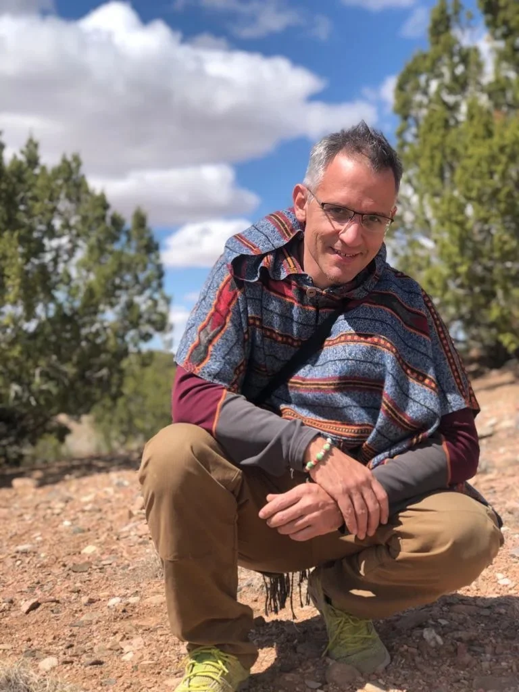
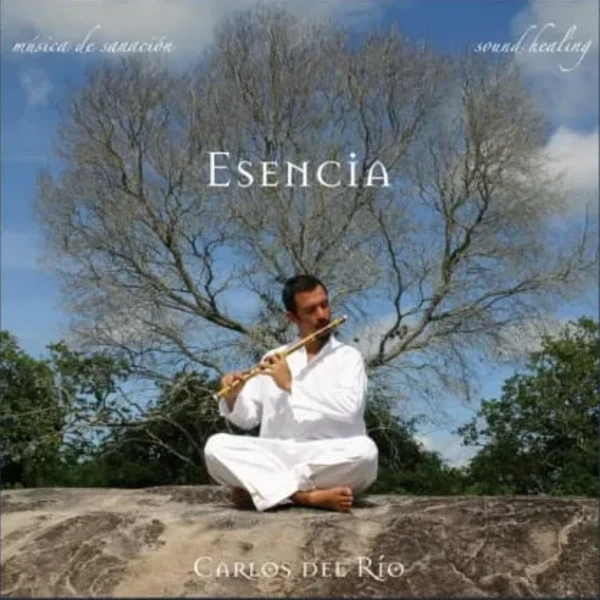
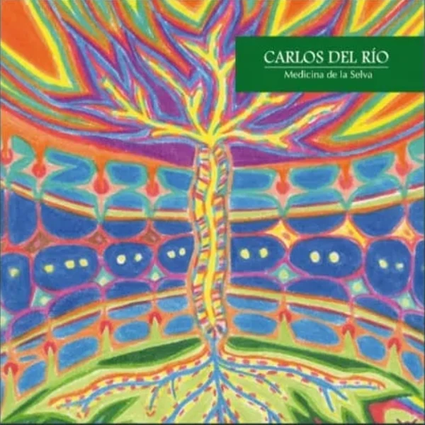
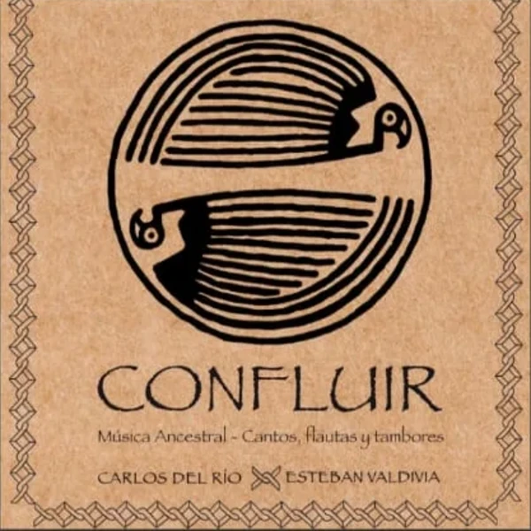
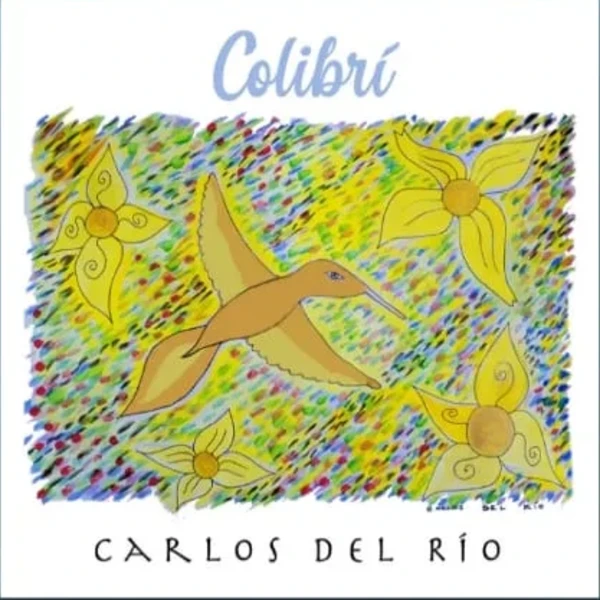
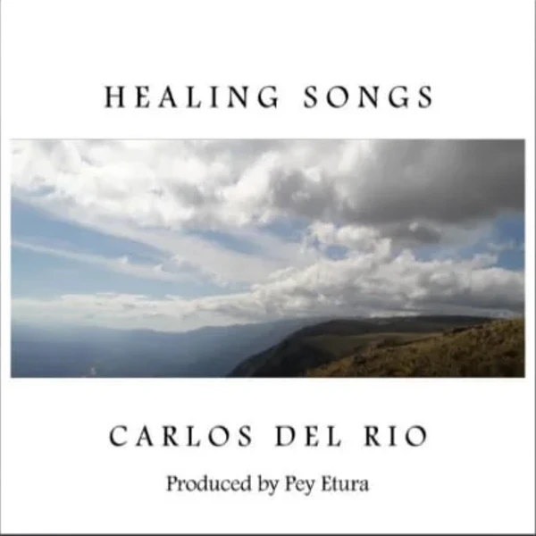
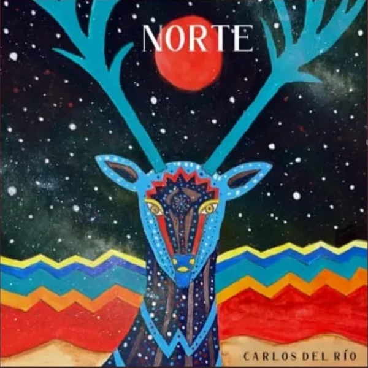
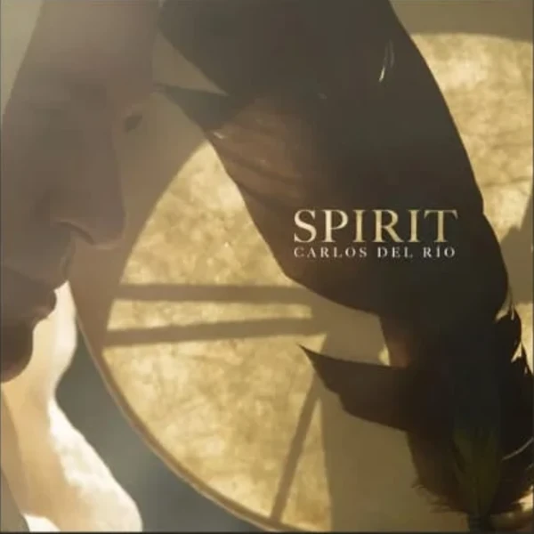
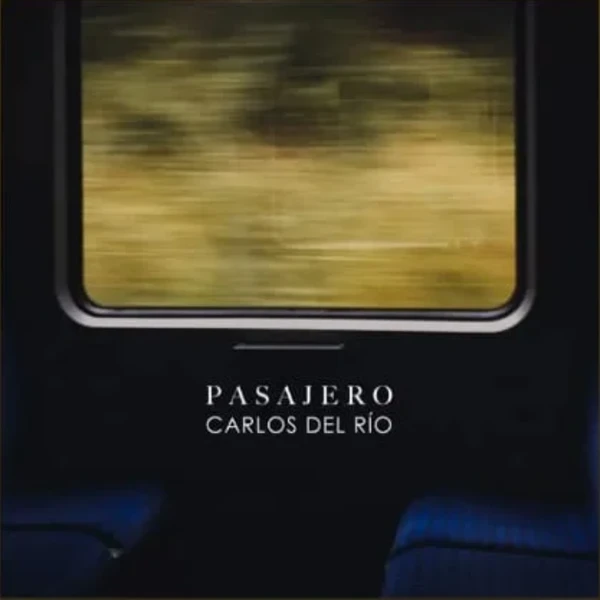
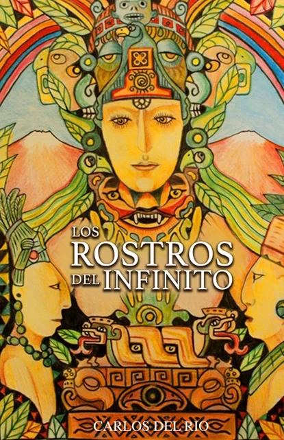

Sanador · Músico · Guía
Un viaje de sanación y autoconocimiento donde se encuentran el arte, la música y las tradiciones ancestrales. Veinte años acompañando a personas a encontrar su propio camino.

Técnicas holísticas que conectan cuerpo, mente y espíritu para guiarte hacia el equilibrio y la armonía interior.
Quién soy
Nací en Perú, entre montañas que enseñan antes de que uno sepa que está aprendiendo. Me he dedicado a la sanación durante los últimos veinte años, integrando distintas herramientas terapéuticas para ayudar a las personas a encontrar su propio camino de transformación.
Soy Ingeniero Comercial y Licenciado en Arte, pero mi verdadera pasión siempre ha sido la sanación. En 2007 entré al Amazonas y el aprendizaje cambió de forma — dejó de ser algo que se escucha y pasó a ser algo que se atraviesa. Después vinieron nueve años en México, en contacto con la tradición tzotzil y el rezo con el fuego. Más tarde la tradición Lakota, con su rigor y su silencio.
Y siempre, atravesándolo todo, la música: los cantos que abren, los que sostienen, los que cierran.
Imágenes que ordenan lo interno. El tarot como mapa de los arquetipos que facilitan el entendimiento y la transformación.
Ritmos y melodías que abren un puente hacia el corazón. El poder del sonido puesto a sanar y a equilibrar.
Veinte años de tradición viva — andina, amazónica, tzotzil, lakota. Una sabiduría ancestral aplicada a la práctica diaria.
El curso online
No es una lista de módulos. Es un sendero: cinco etapas, dieciocho fuegos, y un maestro que camina adelante. Se recorre a tu ritmo, y cada clase que terminas enciende el siguiente fuego del camino.
Cinco etapas, dieciocho fuegos
El Llamado
Lo que te trajo hasta acá
El Espacio Sagrado
El ritual, la energía, las herramientas
Los Cuatro Elementos
Tierra, agua, fuego y aire dentro de ti
Los Animales de Poder
Los aliados que caminan contigo
Los Tres Mundos
Inferior, medio y superior
Mi música
Los cantos que abren, los que sostienen y los que cierran. La música como medicina, disponible para escuchar cuando quieras.

Esencia
Álbum · 2010
Escuchar

Medicina de la Selva
Álbum · 2009
Escuchar

Confluir
Álbum · 2013 · con Esteban Valdivia
Escuchar

Colibrí
Álbum · 2020
Escuchar

Healing Songs
EP · 2021
Escuchar

Norte
EP · 2022
Escuchar
Guacamaya
EP · 2023
Escuchar

Spirit
EP · 2023
Escuchar

Pasajero
EP · 2023
Escuchar
La playlist
del camino
Música Medicina
Playlist · selección de Carlos
Escuchar
El podcast
Un chamán y su aprendiz conversando. Con Andrés Bustamante recorremos el cruce entre el mundo espiritual y la vida moderna: el chamanismo, la conexión con la naturaleza, la tecnología, y las enseñanzas ancestrales que se transmiten de generación en generación.
Para quien busca entenderse mejor a sí mismo y al mundo alrededor.
Escuchar el podcastDos voces
Carlos del Río
El chamán
Andrés Bustamante
El aprendiz
Espiritualidad, chamanismo, naturaleza y tecnología — episodio a episodio.
El círculo de los chamanes se completará.
Carlos del Río · Los Rostros del Infinito

Mi libro
Una exploración profunda de la espiritualidad y el autoconocimiento. Este libro te invita a emprender un viaje hacia tu propio ser, descubriendo las múltiples facetas del infinito dentro de ti.
Sanación y autoconocimiento
Tarot, musicoterapia y medicina indígena.
Exploración espiritual
Cómo conectar con tu esencia y tu propósito.
Herramientas prácticas
Ejercicios y meditaciones para la vida diaria.
La naturaleza
La tierra como fuente de sanación.
Sesiones
Cada sesión es una co-creación. A través de la apertura de oráculos — el Espejo Cósmico, el tarot mítico y el Oráculo de la Unidad — exploramos tus procesos internos y encontramos herramientas prácticas para tu crecimiento.
Duración
1 hora y media
Modalidad
Online